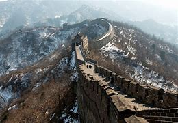
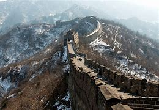

El origen de la Gran Muralla China es a todos los efectos de carácter militar. Su historia
encuentra su punto de partida en la figura del legendario Qin Shi Huang, quien vivió en el
siglo III aC y generalmente es considerado el primer emperador de China . En el 221 a.C.
salió victorioso de los repetidos conflictos que durante décadas involucraron a los principales
reinos de la antigua China, unificándolos bajo su propio dominio: temiendo futuros levantamientos
de los territorios individuales, ordenó la unificación de las murallas defensivas del norte en el
215 a.C. para proteger el imperio recién nacido de las amenazas más al norte, especialmente del
pueblo Xiongnu.
La idea de una muralla imponente fue luego dejada de lado por las dinastías imperiales
posteriores -como las de Liao y Jin- hasta el punto de inflexión perpetrado por la famosa dinastía
Ming (1368-1644 d. C.) que llevó a cabo una verdadera restauración programática contribuyendo a
todos los efectos sobre la columna vertebral de la Muralla China que todavía vemos hoy. El uso
sistemático de ladrillos y piedra en lugar de la tierra batida original aumenta su resistencia y
durabilidad, así como la inserción de miles de torres de vigilancia que trabajan en una seguridad
capilar y específica de la estructura. Figura relevante de esta época es la de Qi Jiguang, célebre
general que se ocupó del complejo entre 1567 y 1570, entre otras cosas, reforzando la zona de Pekín.
En 1644, con la deposición de la dinastía Ming a favor de la Qing y la consiguiente anexión de
Mongolia al Imperio , el objetivo principal de la muralla , que ya no ve ningún intento de
ampliación, decae.
 
